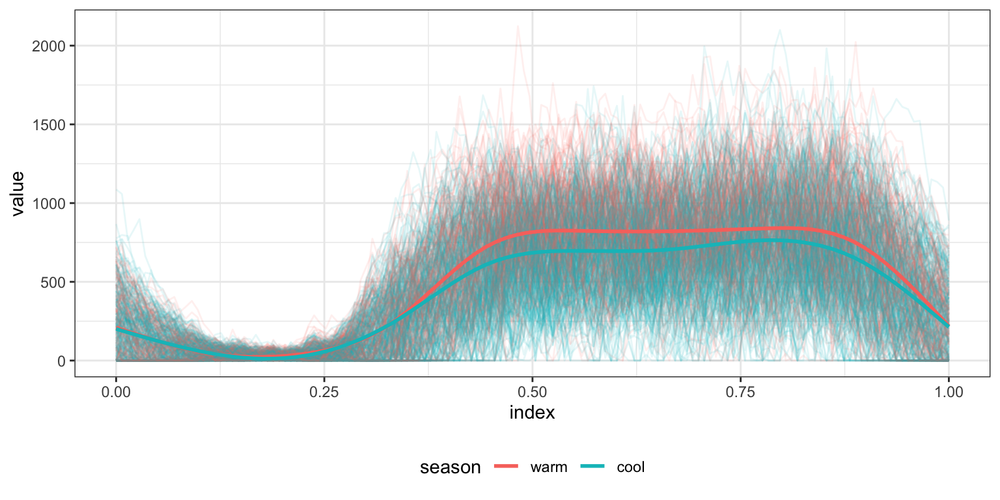

Function-on-Scalar Regression
This page contains a combination of traditional lecture materials (slides) and code demonstrating the relevant methods. The short course will proceed by working through both. We will use several recent packages in our examples; see the About page for information about the package versions.
library(tidyverse)
## ── Attaching packages ───────────────────────────────────────────────────────────────────────────────────────────────────────────────────────────────────────────────────────────────────────────────────────────────── tidyverse 1.2.1 ──
## ✔ ggplot2 3.2.1 ✔ purrr 0.3.3
## ✔ tibble 2.1.3 ✔ dplyr 0.8.3
## ✔ tidyr 1.0.0 ✔ stringr 1.4.0
## ✔ readr 1.3.1 ✔ forcats 0.4.0
## ── Conflicts ──────────────────────────────────────────────────────────────────────────────────────────────────────────────────────────────────────────────────────────────────────────────────────────────────── tidyverse_conflicts() ──
## ✖ dplyr::filter() masks stats::filter()
## ✖ dplyr::lag() masks stats::lag()
library(refund)
library(refund.shiny)
## This version of Shiny is designed to work with 'htmlwidgets' >= 1.5.
## Please upgrade via install.packages('htmlwidgets').
theme_set(theme_bw() + theme(legend.position = "bottom"))In this section we’ll use the HeadStart data to motivate the function-on-scalar regression model. Our main outcome of interest is the observed physical activity profile, with predictors including age, sex, and season. This material draws heavily from Goldsmith et al (2016).
Function-on-scalar regression
Practical example
One use of the rainbow plot is to get a quick sense for whether functional responses are related to covariates. Below we plot activity curves according to the season in which they were observed. Because the data are noisy enough that trends are not immediately apparent, we also include smooth means for both seasons.
load("./DataCode/HeadStart.RDA")
as_refundObj(accel) %>%
left_join(dplyr::select(covariate_data, id, season)) %>%
ggplot(aes(x = index, y = value, group = id, color = season)) + geom_path(alpha = .1) +
geom_smooth(aes(group = season), se = FALSE)
## Joining, by = "id"
## `geom_smooth()` using method = 'gam' and formula 'y ~ s(x, bs = "cs")'
Based on the above, we fit the FoSR equivalent of a simple linear regression to these data.
temp_df = covariate_data
temp_df$accel = accel
fosr_slr = bayes_fosr(accel ~ season, data = temp_df,
est.method = "GLS", Kt = 8, basis = "pbs")
## Warning in model.matrix.default(mt_fixed, mf_fixed, contrasts): non-list
## contrasts argument ignored
## Using OLS to estimate residual covariance
## GLS
as_refundObj(fosr_slr$beta.hat) %>%
ggplot(aes(x = index, y = value)) + facet_grid(~id) + geom_path()
The refund.shiny package has helpful tools for visualizing the results of a function-on-scalar regression analysis; these can be helpful for understanding the results.
plot_shiny(fosr_slr)To examine more complex associations, and to account for possible confounding, we use the FoSR equivalent of a multiple linear regression.
fosr_mlr = bayes_fosr(accel ~ season + sex + BMIZ + TV +
videogames + mom_work + asthma + child_age +
mom_age + educ_mom + num_rooms + mom_born_US + tricep +
subscap + skinfold, data = temp_df,
est.method = "GLS", Kt = 8, basis = "pbs")
## Warning in model.matrix.default(mt_fixed, mf_fixed, contrasts): non-list
## contrasts argument ignored
## Using OLS to estimate residual covariance
## GLS
as_refundObj(fosr_mlr$beta.hat[-1,]) %>%
ggplot(aes(x = index, y = value, group = id)) + geom_path(alpha = .5)Again, the results of this model can be easier to understand using interactive graphics.
plot_shiny(fosr_mlr)For these same data, we can compute average activity counts for each subject and fit a usual MLR.
temp_df = covariate_data
temp_df$mean_accel = apply(accel, 1, mean)
mlr = lm(mean_accel ~ season + sex + BMIZ + TV +
videogames + mom_work + asthma + child_age +
mom_age + educ_mom + num_rooms + mom_born_US + tricep +
subscap + skinfold, data = temp_df)
summary(mlr) %>%
broom::tidy() %>%
knitr::kable(digits = 2)| term | estimate | std.error | statistic | p.value |
|---|---|---|---|---|
| (Intercept) | 585.54 | 53.19 | 11.01 | 0.00 |
| seasoncool | -60.17 | 10.53 | -5.72 | 0.00 |
| sexmale | -9.38 | 10.14 | -0.92 | 0.36 |
| BMIZ | -0.10 | 3.56 | -0.03 | 0.98 |
| TV>=2h | -16.71 | 10.18 | -1.64 | 0.10 |
| videogames>=1h | -7.47 | 11.47 | -0.65 | 0.52 |
| mom_workyes | -4.44 | 10.15 | -0.44 | 0.66 |
| asthmayes | -2.99 | 10.73 | -0.28 | 0.78 |
| child_age | -0.91 | 0.65 | -1.40 | 0.16 |
| mom_age | -0.33 | 0.87 | -0.38 | 0.71 |
| educ_mom | -0.84 | 1.68 | -0.50 | 0.62 |
| num_rooms | 5.17 | 4.79 | 1.08 | 0.28 |
| mom_born_USyes | 3.14 | 12.76 | 0.25 | 0.81 |
| tricep | 0.83 | 1.48 | 0.56 | 0.58 |
| subscap | 0.01 | 1.36 | 0.01 | 0.99 |
| skinfold | -0.66 | 0.79 | -0.83 | 0.41 |
The table below compares the results of the MLR to the integrated coefficients in the FoSR.
table.compare = data.frame(beta.mlr = coef(mlr),
beta.fosr = apply(fosr_mlr$beta.hat, 1, mean))
knitr::kable(table.compare, digits = 2)| beta.mlr | beta.fosr | |
|---|---|---|
| (Intercept) | 585.54 | 541.60 |
| seasoncool | -60.17 | -67.39 |
| sexmale | -9.38 | -14.54 |
| BMIZ | -0.10 | -0.17 |
| TV>=2h | -16.71 | -18.08 |
| videogames>=1h | -7.47 | -0.44 |
| mom_workyes | -4.44 | -7.57 |
| asthmayes | -2.99 | 2.81 |
| child_age | -0.91 | -0.59 |
| mom_age | -0.33 | 0.19 |
| educ_mom | -0.84 | -0.97 |
| num_rooms | 5.17 | 3.70 |
| mom_born_USyes | 3.14 | -0.13 |
| tricep | 0.83 | -0.10 |
| subscap | 0.01 | -0.82 |
| skinfold | -0.66 | -0.07 |